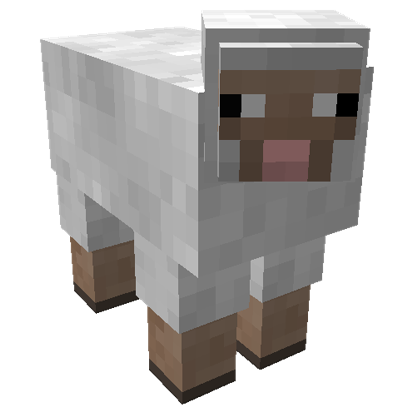
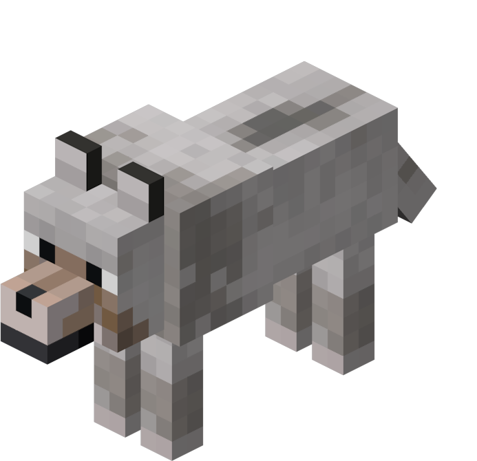
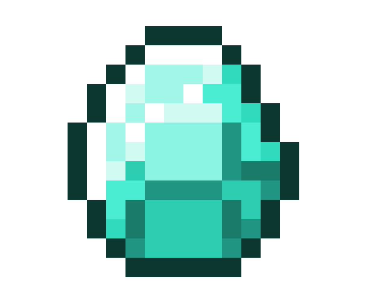
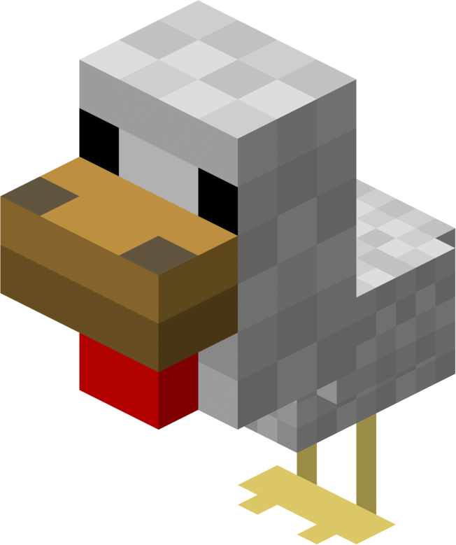
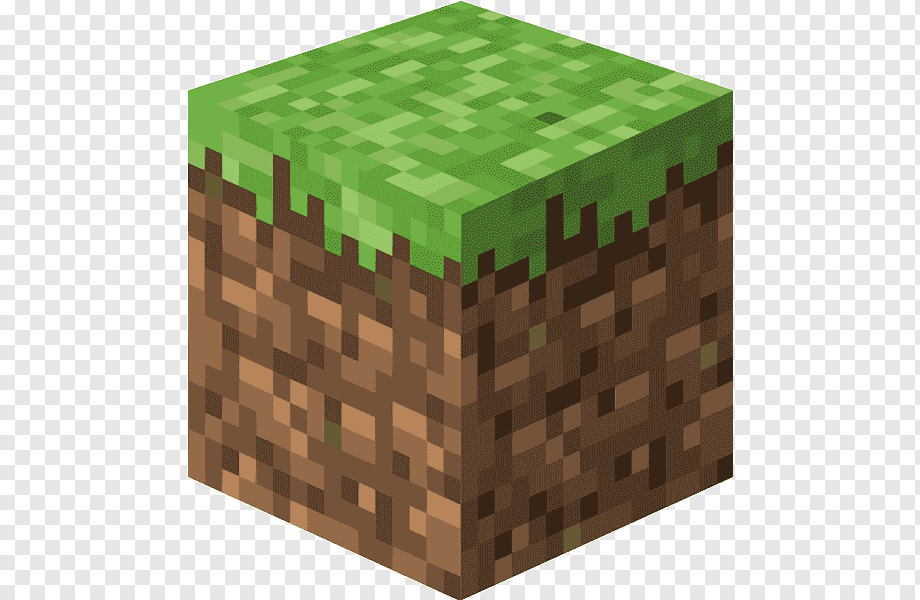

Trojans e ransomware
Malwares podem danificar arquivos ou bloquear o acesso. Evite executar instaladores desconhecidos.
Antes dos números, um panorama: o que a pirataria põe em risco e por que tanta gente recorre a ela. Depois, uma análise da amostra por plataforma, idade e tipo de versão.
Pirataria é usar ou distribuir um jogo sem autorização dos titulares dos direitos.

Downloads de fontes não confiáveis podem trazer riscos; isso não significa que todo arquivo não oficial seja malicioso.

Malwares podem danificar arquivos ou bloquear o acesso. Evite executar instaladores desconhecidos.

Um programa malicioso pode consumir recursos do dispositivo sem consentimento.
Alguns malwares tentam capturar senhas e outros dados pessoais.
Este dataset descreve usuários e versões; não mede vendas perdidas nem permite concluir causa e efeito.
Registros e categorias presentes no CSV, como plataforma e versão.
Vendas, renda ou perdas econômicas; seriam necessários outros dados e métodos.

Para Gabe Newell, pirataria é falha de serviço.
Preço regional alto, pagamento restrito, jogo indisponível.
Assinaturas e jogos gratuitos: acessíveis e seguros.
Agora, os dados do dataset do Minecraft.
Todas as linhas do CSV, sem os identificadores de Discord e Minecraft. Use a busca e os filtros para explorar os registros.
| Registro | Idade | Plataforma | Versão |
|---|
Somente registros classificados como piratas são considerados nesta comparação.

Cada círculo representa um usuário pirata com idade válida. A linha vertical indica a média de idade.
A matriz contém um quadrado para cada registro, em sequência: primeiro todos os originais (versão paga), depois todos os piratas. Assim, a proporção pode ser percebida sem usar gráfico de pizza ou barras.
Usado para comparar computador e celular pelo tamanho dos círculos. Quanto maior o círculo, maior a quantidade de usuários.
Mostra a distribuição das idades, permitindo enxergar concentração e dispersão, além da média.
Transforma cada registro em um pequeno quadrado, agrupados por tipo de versão, tornando a relação entre piratas e originais visualmente perceptível.
NewDataSetMinecraft.csv fornecido com o projeto. Os cálculos são feitos a partir dos registros desse arquivo.As visualizações são descritivas. Elas não estimam prevalência entre todos os jogadores, não provam causalidade e não medem impacto econômico.